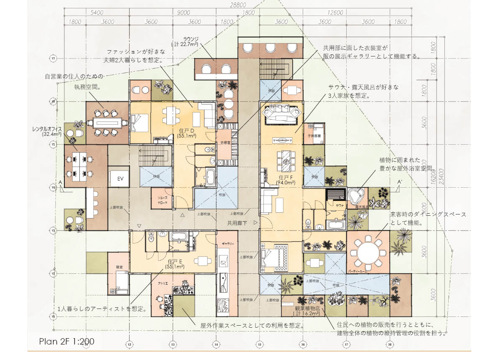
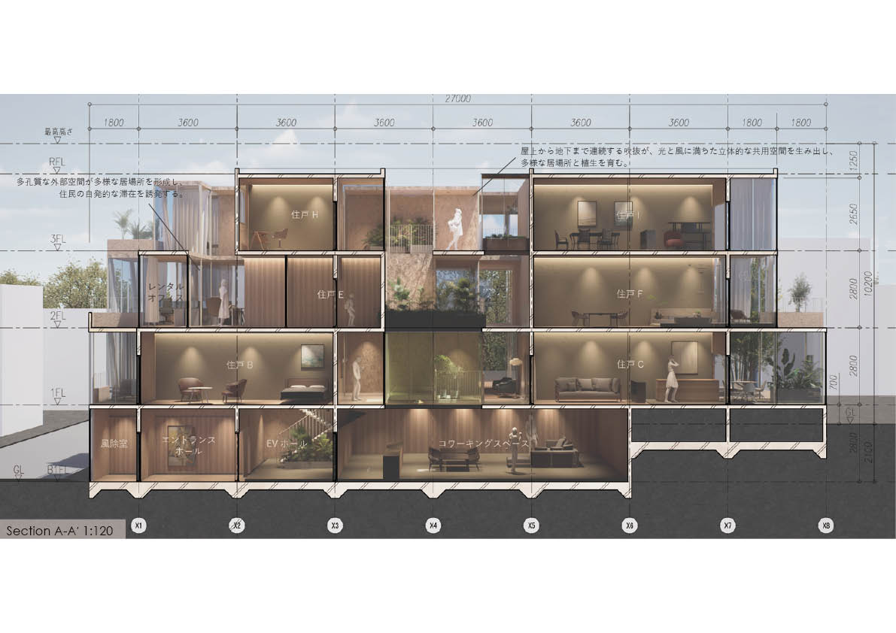
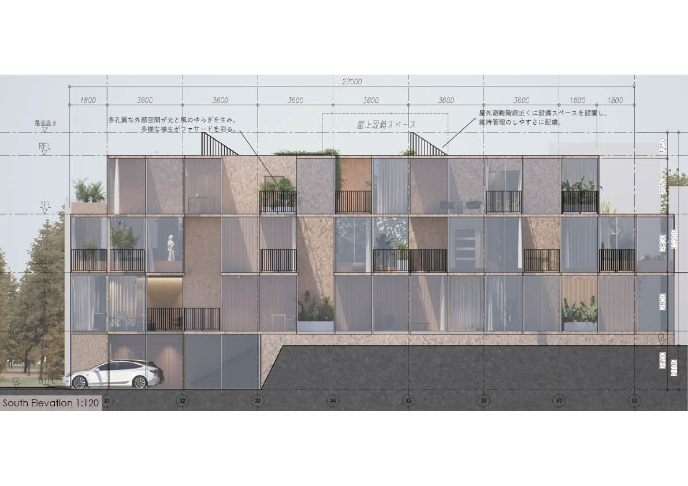
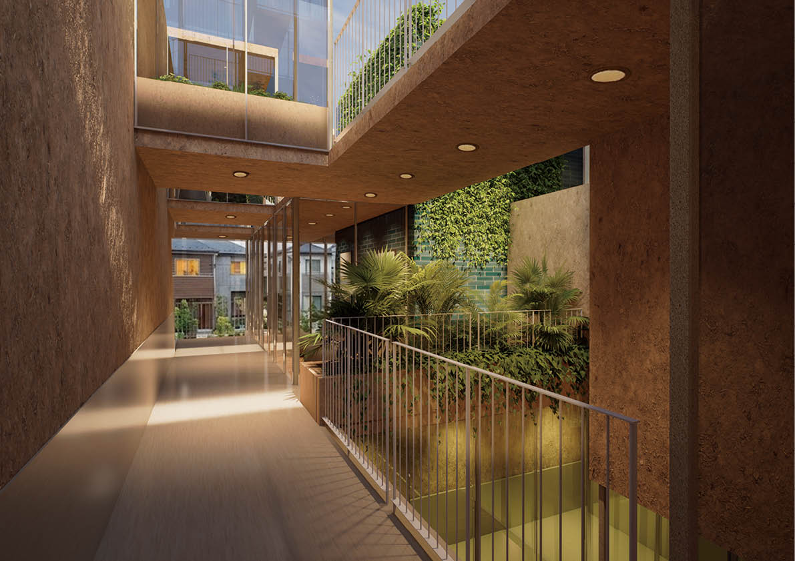
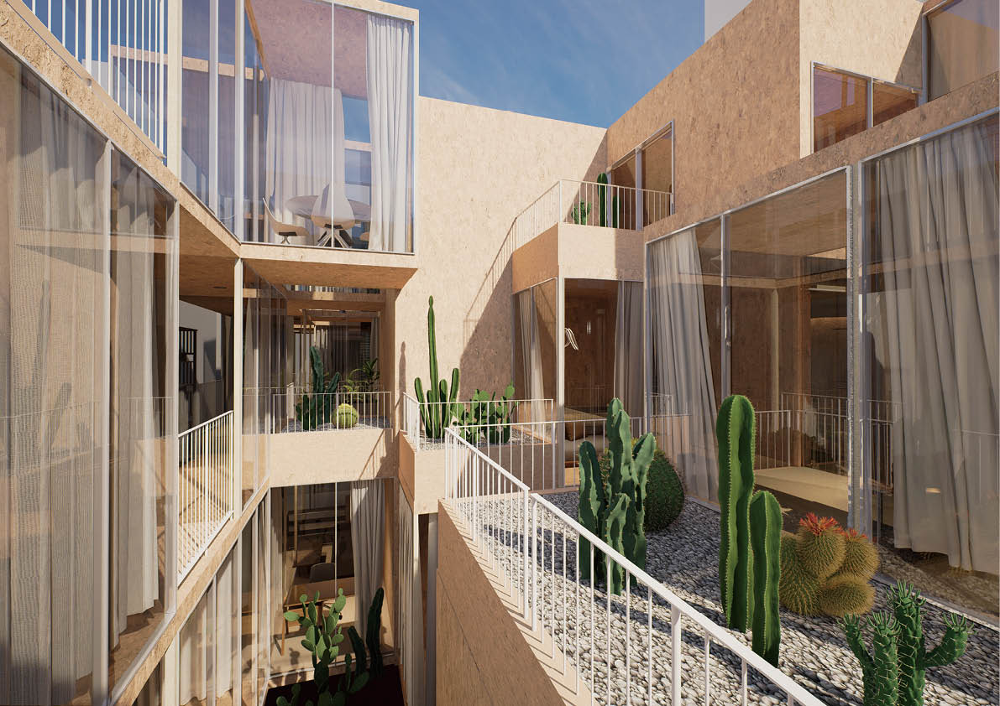

本提案は、「群落」をコンセプトとした集合住宅である。同じ場所に異なる植物が共存し、それぞれ固有の生態系を形成する群落のように、多様な暮らしや価値観が共存する住環境を目指した。住戸を分散配置することで建物内に大小さまざまな余白を生み出し、その空間を人々と植物が共有する共用空間として計画している。 建物全体には吹抜やテラス、多孔質な外部空間を配置し、光・風・温熱環境にゆらぎを与えることで、多様な微気候を形成した。それぞれの環境に応じて異なる植生や居場所が生まれ、居住者は自らに適した場所を選びながら生活することができる。また、専有部と共用部の境界を緩やかにつなぐことで、暮らしや趣味、仕事といった活動が共用空間へ自然に広がり、住民同士の緩やかなコミュニティ形成を促す計画としている。 さらに、共用ラウンジ、ワークスペース、レストラン、書庫、アトリエ、植物園、ドッグランなど、多様な共用機能を建物全体に分散配置し、住民のライフスタイルの変化に応じて柔軟に利用できる空間を提案した。都市に暮らしながら豊かな自然と共生し、人・植物・建築が時間とともに成長する、新しい都市型集合住宅のあり方を提示している。
project
群落に住まう
term
Apr. 2026 - Mar. 2026
type
Competition
credit
Hiroki Awaji, Mitsuhiro Hattori